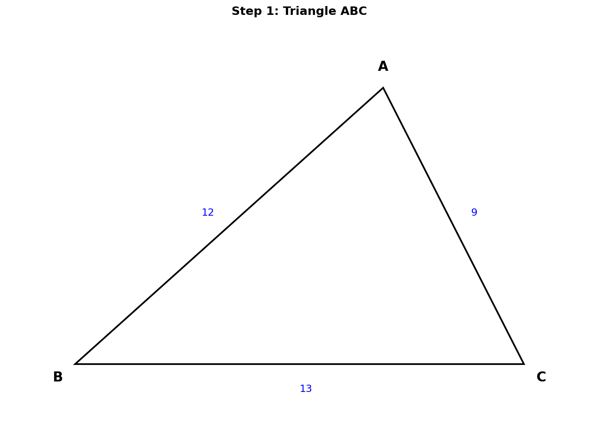
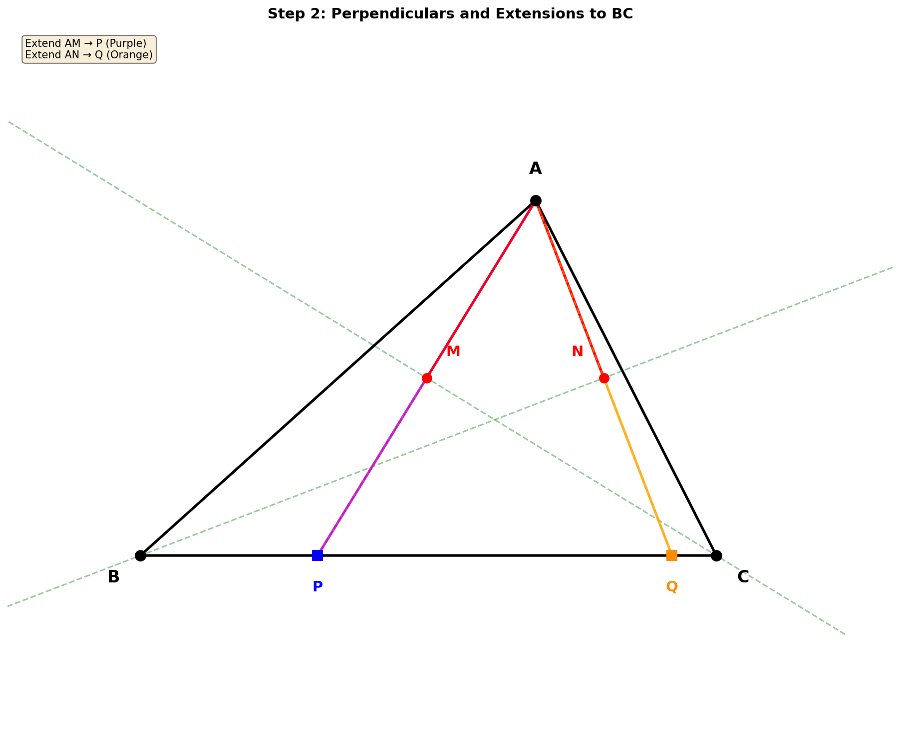
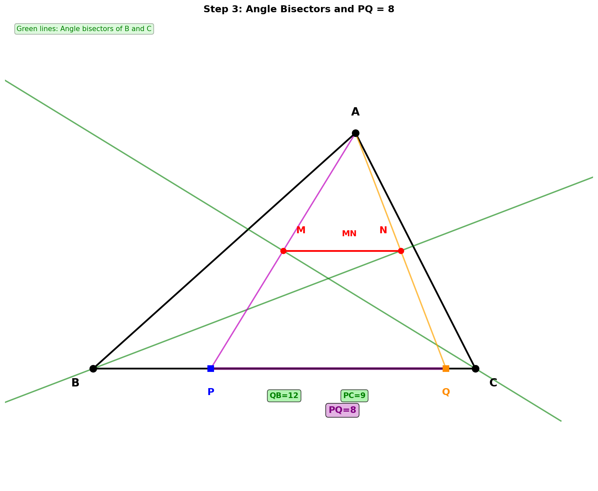
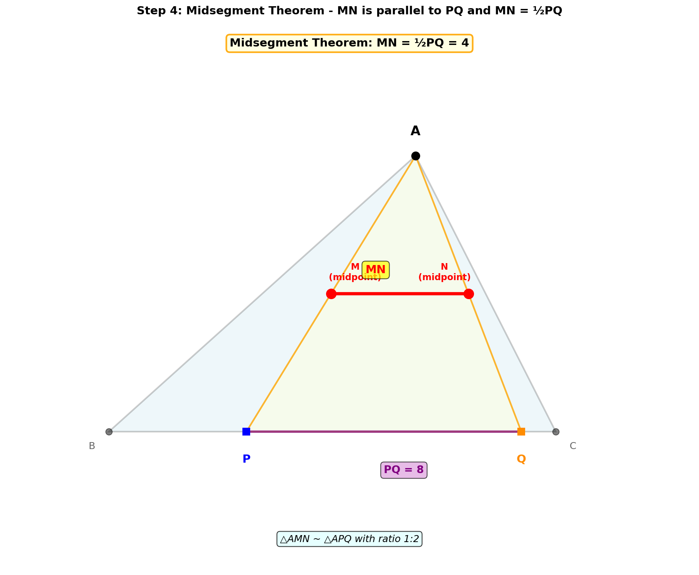
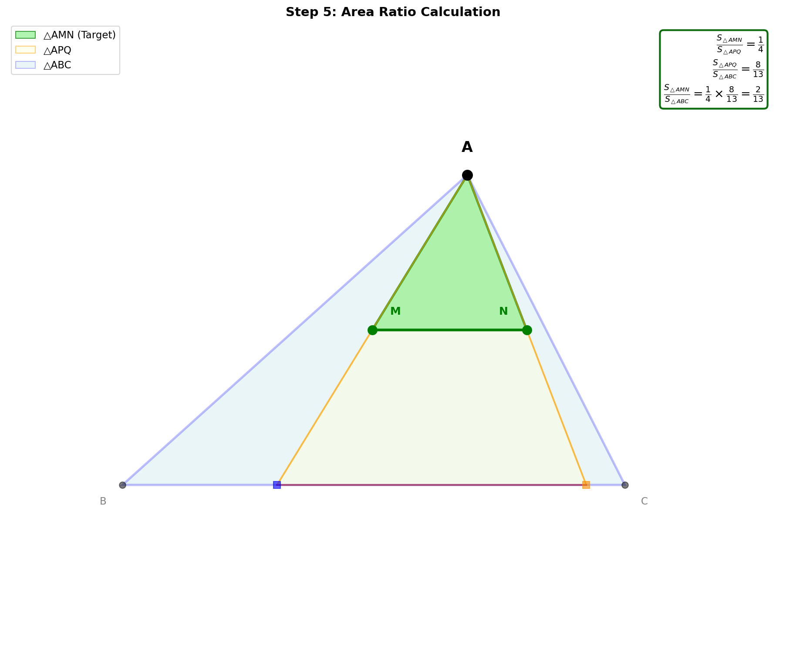
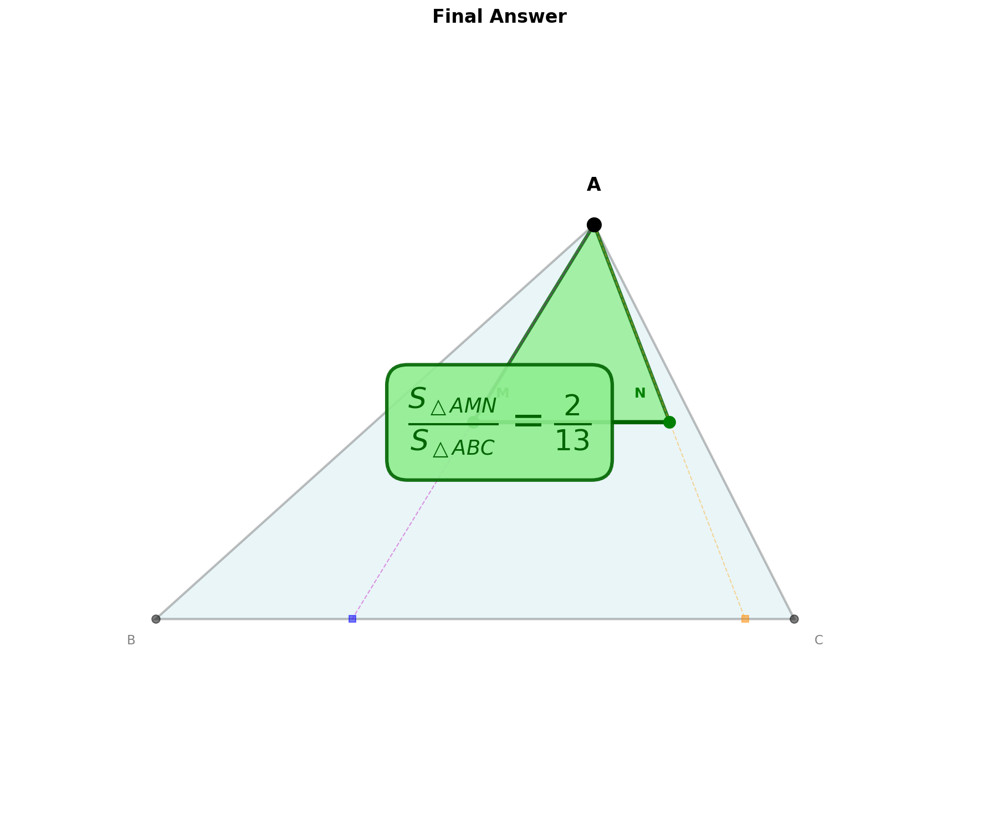

🎯 题目
在△ABC中，已知 AB = 12，AC = 9，BC = 13，
过点A分别作∠C、∠B平分线的垂线，垂足分别为M、N，联结MN，
求 $\frac{S_{\triangle AMN}}{S_{\triangle ABC}}$ 的值。
理解题目条件
首先，让我们画出三角形ABC，并标记已知的三边长度：

AB = 12
AC = 9
BC = 13
💭 思考：题目要求从点A向两个角的平分线作垂线，这让我们想到什么几何性质？
点击下面的提示查看思路：
发现对称性（关键！）
这道题的关键在于利用角平分线的对称性。

当我们从点A向∠C的平分线作垂线，垂足为M时，可以延长AM交BC于点P。
由于CM是∠C的平分线，且AM⊥CM，根据对称性原理：
- △AMC ≅ △PMC（全等，ASA判定）
- 因此 AC = PC = 9
- M是AP的中点
💭 思考：对于∠B的平分线，我们能得到什么结论？
点击下面的提示验证你的想法：
确定P、Q在BC上的位置
现在我们来确定P和Q在BC边上的具体位置：

📍 点P的位置
- PC = AC = 9
- BC = 13
- BP = BC - PC = 13 - 9 = 4
📍 点Q的位置
- QB = AB = 12
- BC = 13
- QC = BC - QB = 13 - 12 = 1
PQ的长度：
PQ = BC - BP - QC = 13 - 4 - 1 = 8
或 PQ = QB - PB = 12 - 4 = 8 ✓
💭 思考：为什么PQ = 8对解题很重要？
点击下面的提示理解：
利用中位线定理
在△APQ中观察M和N的位置：

连接三角形两边中点的线段（中位线）平行于第三边，且等于第三边的一半。
因此：
MN ∥ PQ
MN = $\frac{1}{2}$PQ = $\frac{1}{2}$ × 8 = 4
💭 思考：△AMN与△APQ的面积比是多少？
点击下面的提示计算：
计算面积比
由于MN是△APQ的中位线，△AMN ∽ △APQ，相似比为 1:2

相似三角形面积比等于相似比的平方：
$\frac{S_{\triangle AMN}}{S_{\triangle APQ}} = \left(\frac{1}{2}\right)^2 = \frac{1}{4}$
接下来求△APQ与△ABC的面积关系：
两个三角形有相同的高（从A到BC的垂线），所以面积比等于底边比：
$\frac{S_{\triangle APQ}}{S_{\triangle ABC}} = \frac{PQ}{BC} = \frac{8}{13}$
因此，最终答案为：
$\frac{S_{\triangle AMN}}{S_{\triangle ABC}} = \frac{S_{\triangle AMN}}{S_{\triangle APQ}} \times \frac{S_{\triangle APQ}}{S_{\triangle ABC}} = \frac{1}{4} \times \frac{8}{13} = \frac{2}{13}$
💭 思考：验证一下答案是否合理？
点击下面的提示验证：
1. 利用对称性得到PC=9，QB=12
2. 计算PQ = 8
3. 利用中位线定理得到面积比1:4
4. 同高三角形面积比8:13
5. 综合得到$\frac{2}{13}$
最终答案

最终答案
$\frac{S_{\triangle AMN}}{S_{\triangle ABC}} = \boxed{\frac{2}{13}}$
📝 关键知识点总结
解题思路梳理与总结
🎯 完整解题思路
利用角平分线的对称性
延长AM交BC于P，由对称性得△AMC ≅ △PMC，所以AC = PC = 9，M是AP中点
同理得到Q点位置
延长AN交BC于Q，得AB = QB = 12，N是AQ中点
计算PQ长度
BP = 4，QC = 1，所以PQ = 13 - 4 - 1 = 8
应用中位线定理
MN是△APQ的中位线，MN = ½PQ = 4，△AMN ∽ △APQ，面积比1:4
计算最终面积比
$\frac{S_{\triangle AMN}}{S_{\triangle ABC}} = \frac{1}{4} \times \frac{8}{13} = \frac{2}{13}$
💡 解题技巧总结
- • 看到角平分线+垂线 → 想到对称性，考虑延长构造全等三角形
- • 看到中点 → 想到中位线定理，可能有相似三角形
- • 求面积比 → 考虑相似比或同高/同底的面积关系
- • 复杂问题 → 分解为多个简单步骤，逐步推导
📚 涉及的知识点
角平分线性质
对称性
全等三角形
中位线定理
相似三角形
面积比